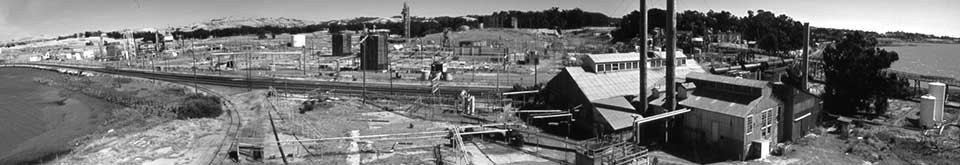
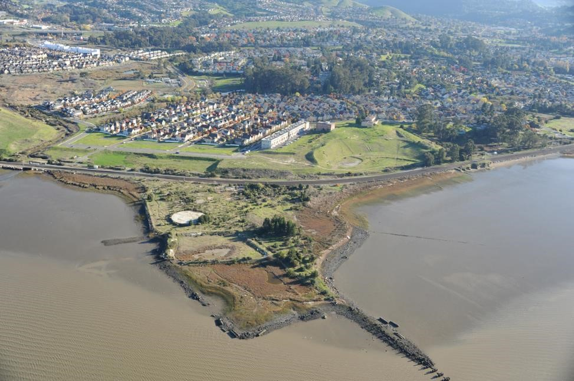
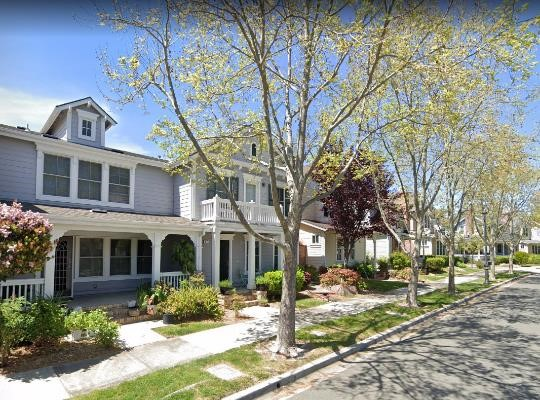
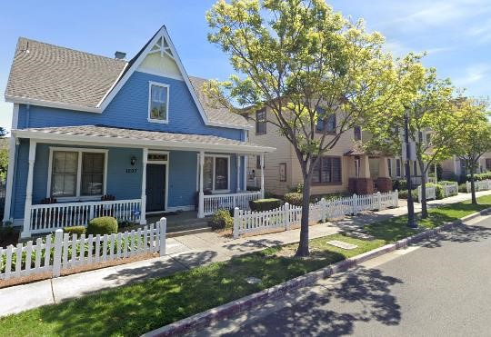
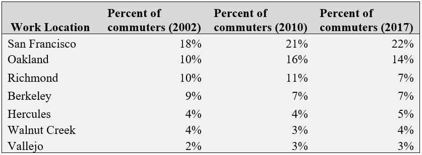

Measuring the Success of New Urbanist Development in Hercules, CA
Final Project for CP213
Dec 10, 2019
Introduction
In 2000 Hercules re-wrote its zoning code to be form-based, prioritizing design and neighborhood character in order to create a walkable, mixed-use community. This paper examines the city’s New Urbanist plan nearly two decades later to measure the community’s success in implementing their form-based code. A visual analysis indicates that Hercules has successfully built architecturally diverse and dense housing. But the city is far from accomplishing its goals. Development of the town center stalled and plans for non-auto travel have faltered. The community envisioned in the 2000 plan has yet to be achieved and reliance on urban design to improve mobility should be questioned.
Community Background
The City of Hercules, located along the San Pablo Bay in Northern California, is a suburban community that has undergone major transformation. The city was originally built around the California Powder Works (later incorporated and renamed Hercules Powder Works, where the city derives its name) in the late 1800s as a company town for the dynamite manufacturing facility (Figure 1) (“Our History”). At its peak during WWI the facility was the largest TNT producer in the country, and after WWII became a major fertilizer manufacturer. The then-rural area made Hercules an ideal location to produce these explosive materials. This attracted other industry, including the Pacific (oil) Refinery Company in 1966, and eventually residential development, which grew in the form of single-family housing around the dynamite plant.
Changes began when the Powder Works plant closed in 1967. After sitting vacant for years, the former industrial site was deemed a “substantial endangerment” in 1985 and required a $12 million remediation effort (Hula, 2016). Clean up of the contaminated soil was completed in 1997, but in the interim the oil refinery had closed. Hercules was left with no tax base and over 150 acres of undeveloped land.
 Figure 1: The Hercules Powder Works manufacturing facility. Year unknown. Retrieved from: http://herculeshistory.org/wp-content/uploads/2010/11/PanoHeader.jpg, accessed on 12/07/2019.
{kind=link}
 Figure 2: Aerial view of Hercules and the former site of the Hercules Powder Works plant. The undeveloped land in the foreground was cleaned up as part of the remediation effort and is planned to house additional residential units and a multimodal train and ferry station (Gilcher, 2015). Retrieved from: The Hercules Powder Works manufacturing facility. Year unknown. Retrieved from: https://clui.org/ludb/site/hercules-explosive-plant-site, accessed on 12/07/2019.
A New Urbanist Plan
In the late 1990s the City of Hercules hired Dover, Kohl, & Partners to develop a vision for their city and the former brownfield site. After community meetings and discussions, the city published “The Plan for Central Hercules, CA” in 2000 (The City of Hercules, 2000). The document’s aim was to transform Hercules from a bedroom community to a walkable, prosperous town through design (Figure 3). The plan claimed that by adopting a form-based zoning code and building around a town center Hercules could preserve mobility without increasing traffic problems; “by building the Town Center in a highly walkable and bikeable format...[and] by growing in a reasonably dense, transit-supportive way...Hercules citizens will be saving fuel, reducing pollution, and preserving their wealth” (The City of Hercules, 2000).
Figure 3: Goals identified by Hercules residents during an eight-day community design charette that were adopted in the city’s plan (The City of Hercules, 2000).
The vision for the former brownfield site, named “The Waterfront” in the plan, contained all the defining aspects of New Urbanist planning: mixed-use development, housing options varying in size and price, small blocks, attractive design, small front yards, along with centralized and landscaped open public spaces. This plan was a rebuttal of 20th century suburban growth, intended to show that good design would empower employees and residents to reduce their time spent in their cars (Smith, 2001).
The plan’s transit improvements involved realignment of the I-80 exit ramp and creation of transit-oriented development in the town center. The Westcat park-and-ride lot would no longer be a surface lot and would be surrounded by retail use “so that instead of just storing cars in Hercules…visitors are enticed to contribute to the local economy” (The City of Hercules, 2000). A longer-term proposal, although not a requirement for the plan, was the construction of a multimodal transit center by the waterfront connecting to Amtrak service on the Capital Corridor line and revival of ferry service to San Francisco (The City of Hercules, 2000; Gilcher, 2015).
Implementation and Development
Construction of new residential units began almost immediately. Subdivisions followed design standards outlined by the city, so the houses built were single-family detached units where the distance between buildings were minimized, garages faced alleyways, and public squares formed the center of each development (Figure 4). The architectural design and home appreciation drew new residents looking for non-traditional suburban tracts (Smith, 2005). Between 2000 and 2010 the city added 1,791 housing units and its population grew by 3,573 (Table 1).
  Figure 4: Single-family, detached homes developed on the former brownfield site in Hercules. All the units have different architectural styles, have no auto-centric uses facing the street, and are meticulously landscaped. Images from Google Maps.The financial crisis in 2008 halted further development. As a result, major portions of the 2000 plan have not been developed. Notably, in-fill development in the town center has not occurred. Development was underway to reorganize strip-mall retail into walkable, transit-oriented development, but the city was struggling with construction costs and had to sell properties to new developers who have cut corners on the original design (Gilcher, 2015).
Today, the waterfront multi-model transit center is still only a mock-up. The mixed commercial/residential town center is dominated by surface parking (Figure 5). The park-and-ride lot for Westcat bus service has not been relocated and remains isolated between the highway and railroad (Lochner and Burgarino, 2008).
 Figure 5: Left, a sketch from “The Plan for Central Hercules, CA” displaying plans for realignment of Exit 23 on I-80 and mixed-use, transit-oriented development. Right, current aerial imagery from Google Maps showing how only portions of the plan have been completed. Residential units and a Civic Center were built, but the bus station remains in a pedestrian-hostile location and much of the town center is comprised of parking lots.
Figure 5: Left, a sketch from “The Plan for Central Hercules, CA” displaying plans for realignment of Exit 23 on I-80 and mixed-use, transit-oriented development. Right, current aerial imagery from Google Maps showing how only portions of the plan have been completed. Residential units and a Civic Center were built, but the bus station remains in a pedestrian-hostile location and much of the town center is comprised of parking lots.
Measuring Success
Almost two decades after a plan was published identifying how Hercules could transform its community many of those goals have yet to be realized. Unfortunately, the outcome is that Hercules’ existing development is often in direct contrast with the city’s plan for interconnected uses and reduced auto use. Residents have landscaped greenspace, a new Civic Center and Library, and walking paths between subdivisions but must drive to use the bus station or go grocery shopping (Kilduff, 2007).
Table 2, which identifies major work destinations for residents of Hercules, helps demonstrates how Hercules has not transformed into a transit-supportive, live-work neighborhood. Hercules residents are increasingly commuting outside of the city for work to regional job centers like San Francisco and Oakland. These destinations are not directly serviced by Westcat, highlighting that Hercules has failed to develop the commercial backbone that was requested in the 2000 plan to keep trips local. Since the New Urbanist development began the city’s function as a bedroom community has only grown.
At the surface it does appear that residents have become less auto-dependent. The percent of workers commuting by car decreased from 90% to 84% between 2000 and 2010 (Table 1). The share taking transit to work increased slightly, but it is difficult to identify whether these mode changes were influenced by neighborhood design or a result of neighborhood preference. Additionally, work trips do not make up the majority of household trips, so it is unclear whether vehicle miles traveled and overall auto usage has decreased.
*Data for 2000, 2010, and 2017 is for the census designated place of Hercules City. Data for 1990 is not available at that scale, an instead represents tracts 06013359101, 06013359303, and 06013359304.
 Table 2: Major commute destinations (Census Places) for workers in The Waterfront neighborhood of Hercules (Census Tract 06013359105). Data from the 2002, 2010, and 2017 LEHD Origin-Destination Employment Statistics (LODES).
Studies have shown that Hercules’ attempt at improving mobility through design is not an outlier. A meta-analysis by Stevens (2017) concluded that increasing density and minimizing distance to downtown can decrease driving. The study notes, however, that the impact is small and that planners should not rely solely on compact development for reduced vehicle miles traveled. Handy (2005) comes to a similar conclusion, writing that design strategies may reduce auto use, but “whether these strategies can change attitudes toward transportation and thereby change desired behaviors rather than simply enabling it” has yet to be determined.
Chatman (2008) gives a critique as well, saying that “merely providing attractive environments and uses accessible to walkers and transit users may not alter travel behavior significantly.” He advocates for a stick more than carrot approach and proposes that in order to reduce auto mileage road design, standards should be relaxed, network load density should be increased, and transit and desirable walking options should be available. Hercules changed their zoning code and improved the walkability of its neighborhoods but stopped short of implementing non-form-based plans. Road diets and priced parking that may have penalized driving and in turn changed mode choice behavior are absent from the 2000 plan.
Conclusions
What the city has accomplished is successfully building housing. Thanks to an abundance of developable land and changes in the zoning code Hercules increased its housing stock and density (Table 1). Other locations in the Bay Area are not as privileged to have so much space to grow, which makes Hercules a prime location for continued investment in residential development. For the $150,000 price tag that came with designing the plan the benefit to residents of appreciating homes may be a reasonable cost. However, many residents have complained about the pace at which changes are occurring and wish that the walkable live-work neighborhood that was advertised would have developed by now (Kilduff, 2007; Lochner and Burgarino, 2008). They are not experiencing benefits that may come with reduced vehicle travel and the New Urbanist approach does not appear to solve problems identified by the community (Figure 3). In order to fulfill the goals outlined in the 2000 plan strategies that rely on more than design are required.
References
City of Hercules. The plan for Central Hercules, California, December 2000. https://www.ci.hercules.ca.us/home/showdocument?id=196
Chatman, Daniel G. “Deconstructing development density: Quality, quantity, and price effects on household travel.” Transportation Research Part A: Policy and Practice 42.7 (2008): 1009-1031.
Gilcher, Elena. “Sustainable Cities through the Design Principles of New Urbanism? A Comparative Analysis in the San Francisco Bay Area.” PlanIt!, 2015.
Handy, Susan. “Smart growth and the transportation-land use connection: What does the research tell us?” International Reigonal Science Review 28.2 (2005): 146-167.
Hula, Richard C. Reclaiming Brownfields: A Comparative Analysis of Adaptive Reuse of Contaminated Properties. Routledge, 2016, pp. 186-189, 205.
Kilduff, P. “A long way to a latte / Four years on, residents of Hercules' New Urbanist neighborhoods are still driving to the mall”. Special to the San Francisco Chronicle. February 17, 2007. https://www.sfgate.com/bayarea/article/A-long-way-to-a-latte-Four-years-on-residents-2648589.php. Accessed 8 December 2019.
Lochner, T. and Burgarino, P. “Hercules disputes ‘big-box’ transit theory.” East Bay Times. February 12, 2008. https://www.eastbaytimes.com/2008/02/12/hercules-disputes-big-box-transit-theory/. Accessed 5 December 2019.
“Our History.” The City of Hercules, California, https://www.ci.hercules.ca.us/our-city/our-history. Accessed 7 December 2019.
Smith, C. “Better than Burbs? New Urbanists Build a Town, Not Just Subdivisions, in Hercules.” Special to the San Francisco Chronicle. March 7, 2001. https://www.sfgate.com/bayarea/article/Better-than-Burbs-New-Urbanists-build-a-town-2945123.php. Accessed 7 December 2019.
Smith, C. “Everything Old is New Again.” Special to the San Francisco Chronicle. March 19, 2005. https://www.sfgate.com/bayarea/article/Everything-old-is-new-again-The-burbs-take-on-3177159.php. Accessed 7 December 2019.
Stevens, Mark. "Does compact development make people drive less?" Journal of the American Planning Association 83.1 (2017): 7-18.